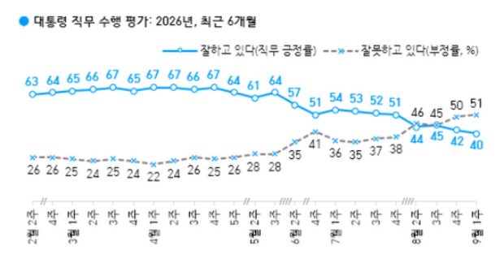
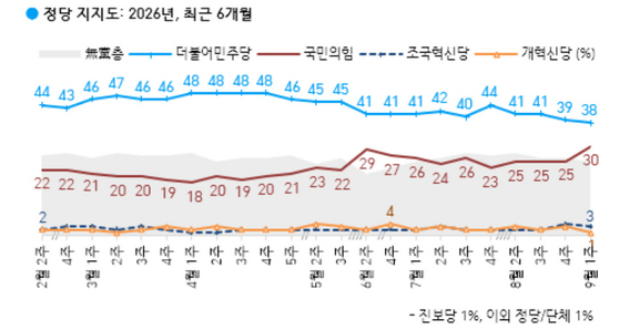
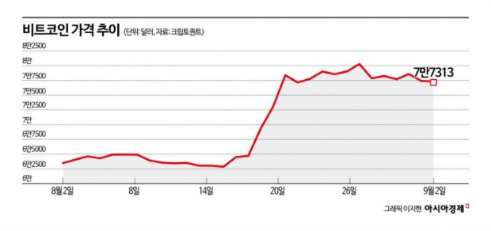
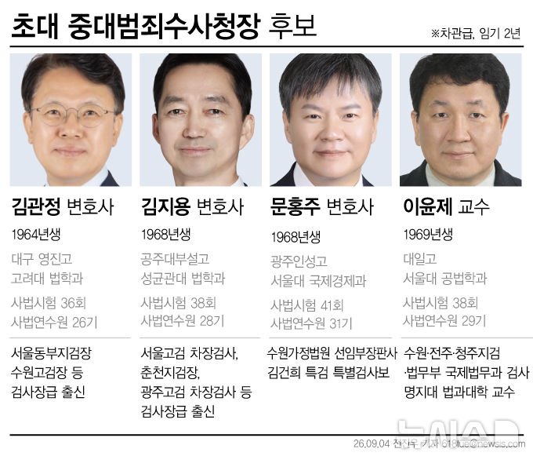

9/5(토) · 기준 2026-09-04 22:00 ~ 2026-09-05 06:00
엑셀 다운로드
"이미지 다운로드"를 누르거나, 이미지를 길게 눌러 저장한 뒤 카톡으로 보내세요.





![김치프리미엄이 돌아왔다…한국서 더 비싼 비트코인[비트코인 지금]](images/infographics/article_09_2.png)
![[연합뉴스] 초대 중대범죄수사청장 후보 4명 압축](images/graphics/연합뉴스_01.jpg)
![[연합뉴스] 공소청 직제 개편안](images/graphics/연합뉴스_02.jpg)
![[뉴시스] 국립대 등록금 전액 지원…충원율은 대학별 제각각](images/graphics/뉴시스_03.jpg)
![[뉴시스] 태풍 '크로반' 예상 이동 경로](images/graphics/뉴시스_05.jpg)
![[뉴스1] [그래픽] 공소청 직제 개편안](images/graphics/뉴스1_06.jpg)
![[뉴스1] [오늘의 증시] 9월 4일 코스피 코스닥](images/graphics/뉴스1_07.jpg)
![[뉴스1] [오늘의 그래픽] 행정수도 이전 '찬 48%·반 44%'…공공기관 이전 57% 찬성](images/graphics/뉴스1_08.jpg)
![[뉴스1] [그래픽] 강남3구 아파트 외지인 매입 비중](images/graphics/뉴스1_09.jpg)
![[뉴스1] [그래픽] 의원급 의료기관 최근 10주간 인플루엔자 의사환자 분율](images/graphics/뉴스1_10.jpg)
![[뉴스1] [그래픽] 李대통령 프랑스 국빈방문 주요 일정](images/graphics/뉴스1_11.jpg)
![[뉴스1] [그래픽] 이재명 대통령 직무 수행 평가](images/graphics/뉴스1_12.jpg)
![[뉴스1] [그래픽] 정당 지지도 추이](images/graphics/뉴스1_13.jpg)


![김치프리미엄이 돌아왔다…한국서 더 비싼 비트코인[비트코인 지금]](images/article_09.png)


{kind=link}
{kind=link}
{kind=link}
{kind=link}
{kind=link}